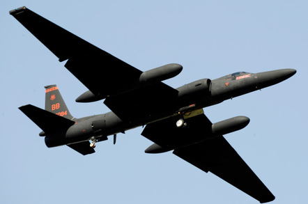
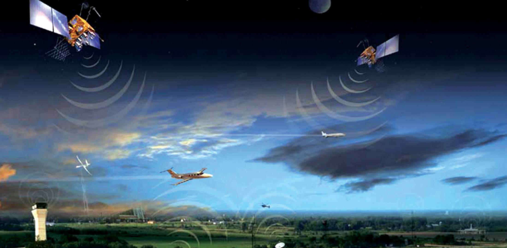

Air Traffic Control in LA failed (26)
The air traffic control has the important responsibility of informing aircraft pilots about relevant information regarding weather, routes, the distance between other airplanes, and all the impending dangers. Failing to communicate with aircraft pilots promptly could result in a catastrophe mostly in finance field. On September 14, 2014, at 5 P.M. air traffic control at the LA airport lost voice communication with approximately 400 airplanes being tracked in the southwestern United States and many planes were headed towards each other.
 So what happened? A stealth plane, the U-2, managed to trigger the failure because its own information system was too demanding for those on the ground and while it was flying over southwestern US, it caused LAX computers to crash and hundreds of flights to be delayed. The U-2 plane was flying at a very high altitude, not understandable for the ERAM system (air traffic control system) that conducts "robusting testing" on all its systems, yet the lack of altitude information in the U-2’s flight plan caused the automated system to cycle off and on trying to fix the error. At this point the primary voice communication system shut down unexpectedly. The computer had to examine a large number of air routes to "deconflict the aircraft with lower-altitude flights". The process "used a large amount of available memory and interruped the computer's other flight-processing functions".
The conclusion is that more than 400 flights were deleted or missing and the collapse of the "new $40 billion air traffic control system known as NextGenm which encompasses ERAM" revealed a lot of bugs, weakness' and failures.
solution
Although this failure was eventually remedied, it required those working in air traffic control to communicate via low-tech means and rely on a backup computer system and more memory was reportedly added to the system.